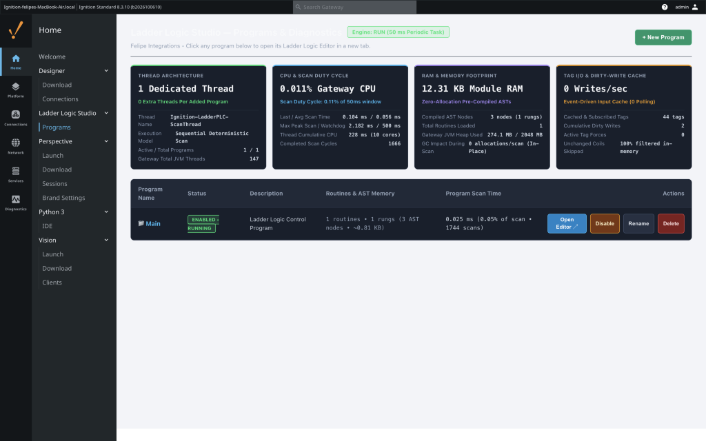
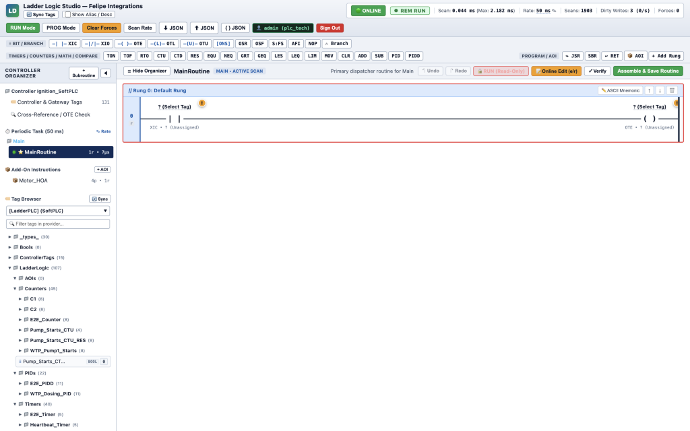
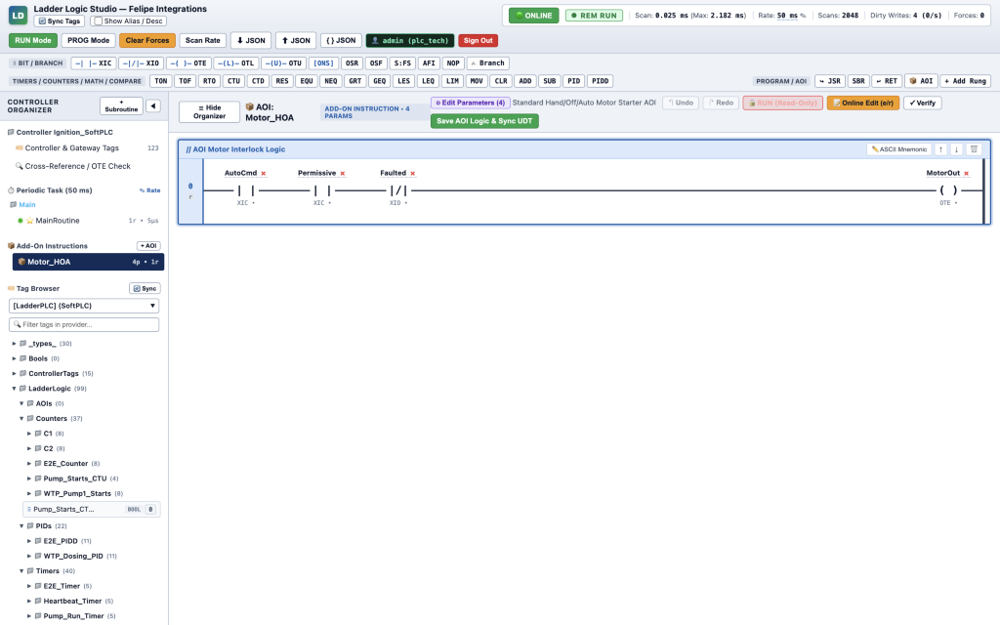
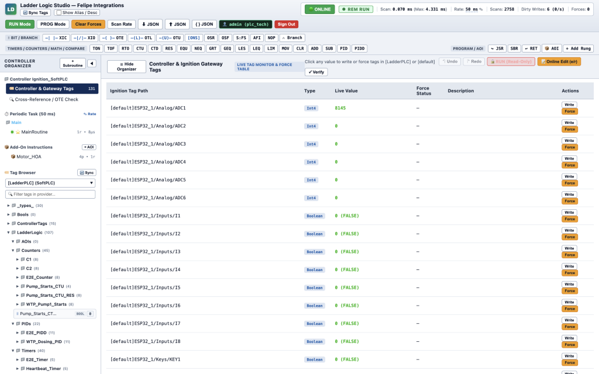
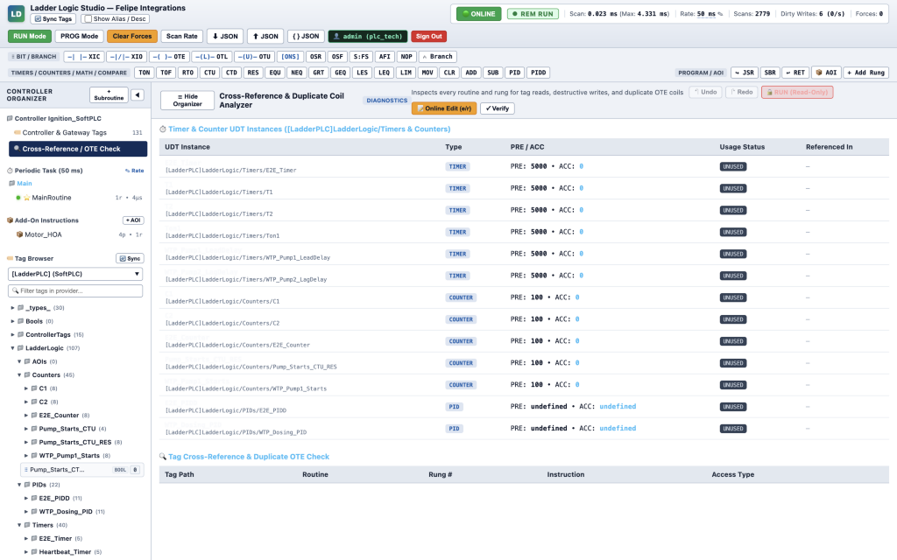
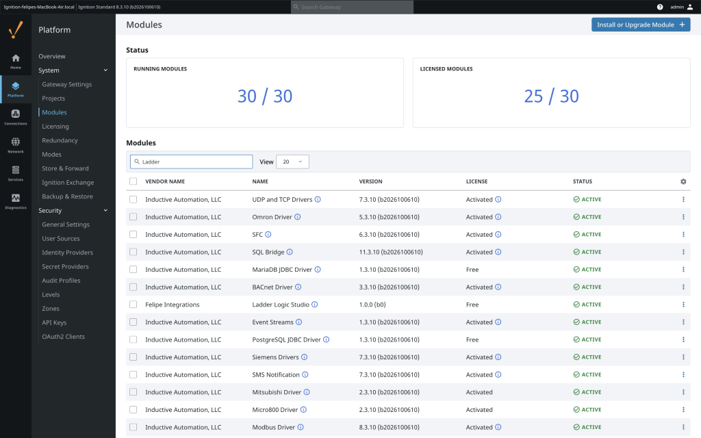

Industrial Ladder Logic SoftPLC execution engine and live browser-based Ladder Logic Editor—with a familiar look and feel similar to the most common industrial PLC editors—embedded directly inside Inductive Automation's Ignition Gateway.
Sub-millisecond cyclic scan loop supporting nested parallel branches (BST/NXB/BND), subroutines (JSR/SBR/RET), jumps (JMP/LBL), one-shots, PID/PIDD loops, and custom Add-On Instructions (AOIs).
Automatically exposes all PLC tags, Timers, Counters, and PIDs under [LadderPLC] with dirty-write batching and real-time bidirectional HMI synchronization.
Zero-install visual Ladder Logic Editor mounted at /system/ladder with a familiar industrial PLC editor workflow, live green power-flow rails, multi-rung Shift-selection, tag forcing, and cross-reference diagnostics.

/app/ladder-programs.
/system/ladder): Drag-and-drop instruction toolbar, Controller Organizer, live [LadderPLC] Tag Browser, online editing (e/r), and ASCII mnemonic bar.
Motor_HOA) with automatic UDT synchronization.
[LadderPLC] and [default] providers.
OTE coils.